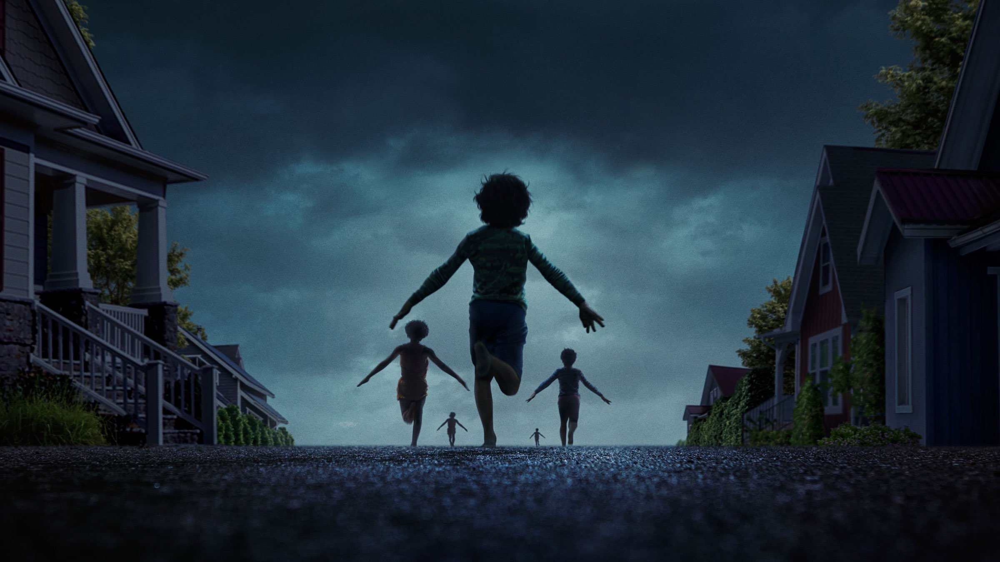
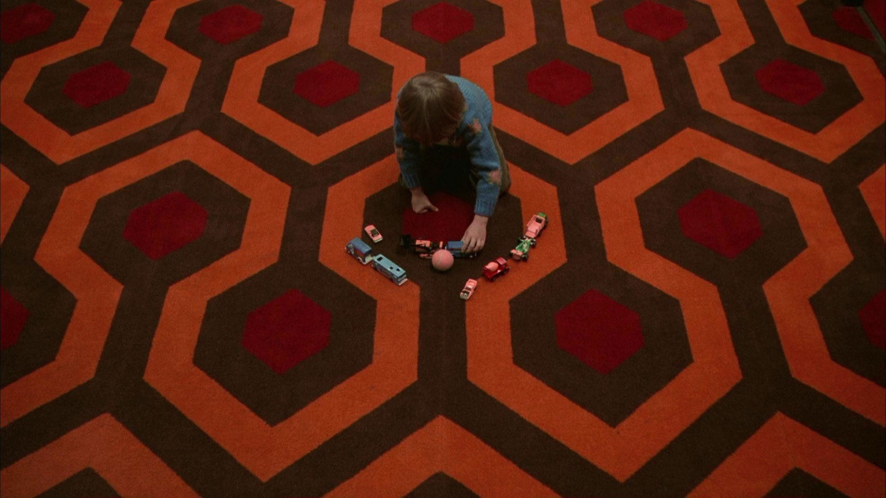
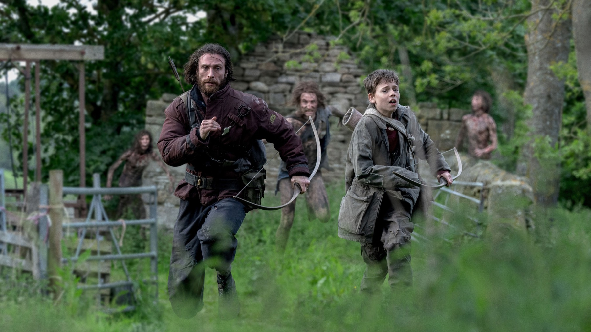

8 horror da vedere in streaming per Halloween
Dal labirinto dell'Overlook Hotel ai bambini scomparsi di Weapons: otto horror amati dalla critica, tutti in abbonamento in Italia
Ottobre è il mese in cui anche chi giura di non sopportare gli horror finisce sul divano con le luci spente. Per prepararci alla notte del 31 abbiamo scelto otto film molto diversi tra loro: un classico intoccabile, due incubi d'autore alla luce del sole e del gotico più puro, e cinque titoli recenti che hanno fatto parlare critica, box office e persino l'Academy. Hanno tutti una cosa in comune: si possono vedere in abbonamento su una piattaforma italiana.
Una precisazione pratica: i cataloghi cambiano spesso, quindi per ogni film indichiamo dove si trova al momento in cui scriviamo, secondo i dati di JustWatch. Prima della serata horror, un controllo veloce non guasta.
The Shining (1980)

Non si può iniziare da nessun'altra parte. Il film di Stanley Kubrick con Jack Nicholson è uno di quegli horror che si riscoprono a ogni visione, tra corridoi infiniti, moquette ipnotiche e una tensione che cresce in silenzio. Due curiosità per la serata: gli esterni dell'Overlook Hotel sono quelli della Timberline Lodge, sul Mount Hood in Oregon, e Stephen King, autore del romanzo, non ha mai amato questo adattamento, tanto da definirlo l'unico tratto da un suo libro che ricordi di aver odiato. Il resto del mondo, per fortuna, non è d'accordo.
Dove vederlo: in abbonamento su Sky e NOW e su HBO Max.
Midsommar (2019)
Chi ha detto che l'orrore ha bisogno del buio? Ari Aster ambienta il suo incubo in pieno giorno, durante una festa di mezza estate in un villaggio svedese, e affida a Florence Pugh una delle prove più intense della sua carriera. Il villaggio, però, in Svezia non c'è mai stato: il film è stato girato nella campagna intorno a Budapest, dove la produzione ha costruito l'intero borgo da zero. Un horror sul lutto e sulle relazioni che finiscono, abbagliante e crudele.
Dove vederlo: in abbonamento su Sky e NOW.
Nosferatu (2024)
Robert Eggers ha inseguito per anni il sogno di rifare il capolavoro muto di F. W. Murnau del 1922, pietra miliare dell'espressionismo tedesco, e il risultato è un gotico sontuoso e malsano, con Bill Skarsgård irriconoscibile nei panni del conte Orlok e Lily-Rose Depp in quelli di Ellen. Il film ha ottenuto quattro candidature all'Oscar, per fotografia, scenografia, costumi e trucco, diventando il titolo più nominato della carriera di Eggers. Da vedere per l'atmosfera, densa come nebbia.
Dove vederlo: in abbonamento su Netflix.
Longlegs (2024)
Un'agente dell'FBI (Maika Monroe), un serial killer che lascia messaggi in codice e un Nicolas Cage spaventoso come raramente lo abbiamo visto. Il thriller satanico di Osgood Perkins è stato il caso indipendente del 2024: ha superato i 100 milioni di dollari d'incasso nel mondo, diventando il film più redditizio di sempre per la distribuzione Neon e il maggior successo horror indipendente da oltre un decennio. Un film che si insinua sotto pelle e non se ne va più.
Dove vederlo: in abbonamento su Timvision.
Sinners (2025)

Due gemelli, entrambi interpretati da Michael B. Jordan, tornano nel Mississippi del 1932 per aprire un juke joint, un locale dove suonare il blues. Con loro c'è il giovane cugino Sammie, chitarrista dal talento straordinario: è proprio la sua musica, nella notte dell'inaugurazione, ad attirare qualcosa di molto oscuro. Il resto è meglio scoprirlo da sé. Il film di Ryan Coogler ha riscritto la storia degli Oscar: 16 candidature, record assoluto, e quattro statuette, tra cui miglior attore a Jordan, miglior sceneggiatura originale, colonna sonora e fotografia, con Autumn Durald Arkapaw prima donna di sempre a vincere in questa categoria. Musica, vampiri e cinema popolare nel senso più alto.
Dove vederlo: in abbonamento su Sky e NOW.
Weapons (2025)
Una notte, alle 2:17, diciassette bambini della stessa classe escono di casa e spariscono nel buio. Solo uno resta. Con questo incipit Zach Cregger ha firmato uno degli horror più discussi degli ultimi anni, costruito come un mosaico di punti di vista: quello della maestra Justine (Julia Garner), additata da tutta la città come colpevole, quello di un padre disperato (Josh Brolin) e di molti altri abitanti di una cittadina che nasconde più di un segreto. Agli Oscar 2026 Amy Madigan ha vinto come miglior attrice non protagonista per il ruolo di zia Gladys, quarant'anni dopo la sua unica candidatura precedente: per un'attrice è la distanza più lunga di sempre tra due nomination. Il momento perfetto per recuperarlo, ora che Cregger è al cinema con il suo Resident Evil.
Dove vederlo: in abbonamento su HBO Max.
28 Years Later (2025)

Danny Boyle e Alex Garland tornano nel mondo di 28 Days Later, quasi tre decenni dopo l'epidemia di rabbia che ha isolato la Gran Bretagna. Più che un sequel, un racconto di formazione feroce e malinconico, girato in modo sorprendente: il direttore della fotografia Anthony Dod Mantle ha usato degli iPhone 15 Pro Max, adattati con ottiche e accessori professionali, rendendolo il film più costoso mai realizzato con uno smartphone. Il risultato non ha niente di amatoriale.
Dove vederlo: in abbonamento su Prime Video.
Bring Her Back (2025)
Dopo il successo di Talk to Me, i gemelli australiani Danny e Michael Philippou alzano il tiro. Due fratelli vengono affidati a una donna premurosa e un po' eccentrica, che nasconde un dolore enorme e un rituale terribile. Sally Hawkins, attrice che associamo alla dolcezza, firma qui una prova agghiacciante: IndieWire l'ha definita psicoticamente brava, e il suo è un ritratto del male tanto più sinistro quanto più è sottile. Non è un film per tutti: è duro, a tratti insostenibile, ma impossibile da dimenticare.
Dove vederlo: in abbonamento su Prime Video.
Come organizzare la maratona
Prima i classici, poi gli incubi recenti: e le luci restano spente.
Se volete costruire una serata a tema, il nostro consiglio è partire da The Shining o Nosferatu per entrare nell'atmosfera, passare a Longlegs o Midsommar quando il pubblico è ormai sveglio, e chiudere con Weapons, il più accessibile e sorprendente del gruppo. Sinners merita una serata tutta per sé, mentre Bring Her Back è riservato ai più coraggiosi: non diteci che non vi avevamo avvertito.
Otto horror diversissimi, dal classico di Kubrick ai titoli che hanno conquistato gli Oscar 2026: abbastanza per coprire tutto ottobre. E nella vostra notte di Halloween quale horror non può mancare? Raccontatecelo su Instagram.
Domande frequenti
Dove vedere Weapons in streaming in Italia?
In abbonamento su HBO Max.
Dove vedere Nosferatu di Robert Eggers in streaming?
In abbonamento su Netflix.
Qual è l’horror più premiato della lista?
Sinners di Ryan Coogler: 16 candidature agli Oscar, record assoluto, e quattro statuette.
Fonti consultate (21)
- JustWatch via TMDB – disponibilità in Italia
- MovieWeb – Why Stephen King dislikes Kubrick's The Shining
- Movie Locations – The Shining in Oregon
- Bustle – Where was Midsommar filmed?
- Giggster – Where was Midsommar filmed
- Bloody Disgusting – Nosferatu nominated for four Academy Awards
- CBR – Nosferatu record Oscar nominations for Eggers
- Variety – Longlegs crosses $100 million
- SlashFilm – Longlegs biggest indie horror hit in a decade
- The Hollywood Reporter – Sinners wins 4 Oscars after record 16 nominations
- Global News – Oscars 2026 winners list
- NBC News – Autumn Durald Arkapaw first woman to win cinematography Oscar
- Variety – Amy Madigan wins Best Supporting Actress
- IndieWire – Amy Madigan wins Oscar for Weapons
- Wikipedia – Weapons (2025 film)
- BPR – In Weapons, 17 school children vanish
- Wikipedia – Sinners (2025 film)
- JoBlo – 28 Years Later was shot with iPhone 15
- Geek Culture – 28 Years Later biggest film shot on iPhone 15 Pro Max
- IndieWire – Bring Her Back review
- MovieWeb – Bring Her Back Rotten Tomatoes score